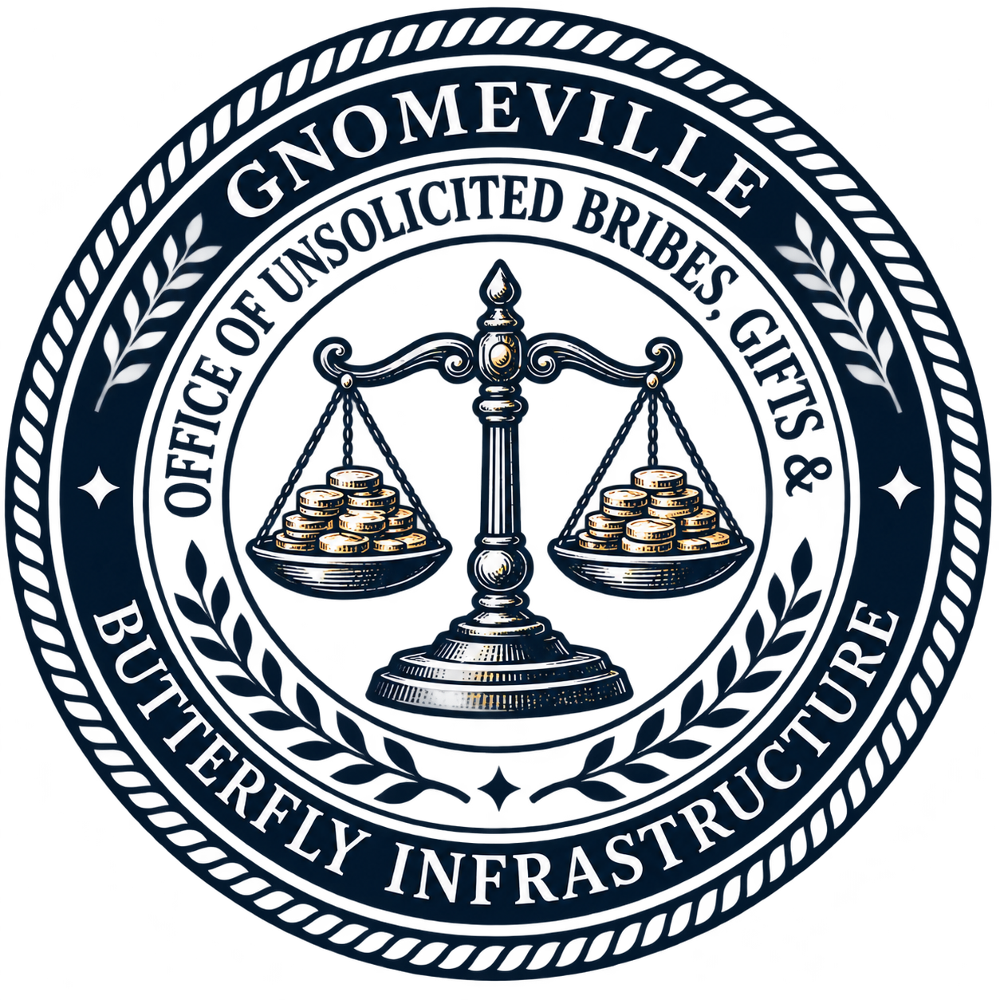

Municipal home / Departments / Unsolicited Bribes

Office of Unsolicited Bribes, Gifts & Butterfly Infrastructure
“We cannot be bought. We can, however, be gifted.”
Director: Management · Operating budget: $0
Welcome, Prospective Benefactor
The Office receives unsolicited bribes, gifts, and other expressions of questionable generosity. All proceeds are directed toward butterfly infrastructure, subject to the customary mysteries of municipal accounting.
Official legal disclaimer: Your generosity is appreciated. Your expectations are not legally binding.
Bribery Reception Desk
For maximum convenience, the desk is located at the Office of Unsolicited Bribes, Gifts & Butterfly Infrastructure. Please ask for Management. A more precise municipal address has not been assigned.
Hours: During normal business hours, whenever those may be.
Instructions: Present your unsolicited offering. Request a receipt. Do not assume that a receipt constitutes agreement to perform any service.
Receipts are issued in triplicate: donor, department, and butterfly. Paper bags are available at reception for a nominal administrative bribe.
Terms & Conditions
Bribes are nonrefundable. Influence is distributed at Management's sole discretion. Results are not guaranteed. Butterflies receive priority consideration.
GnomeNet Reviews
Four unverified transactions. Customer satisfaction not guaranteed.
Will bribe again!
I bribed. I didn't get what I bribed for.
Bribee was pleasant, friendly, and personable. Transaction was smooth. Recommended.
Haven't bribed yet, looking for paper bag.